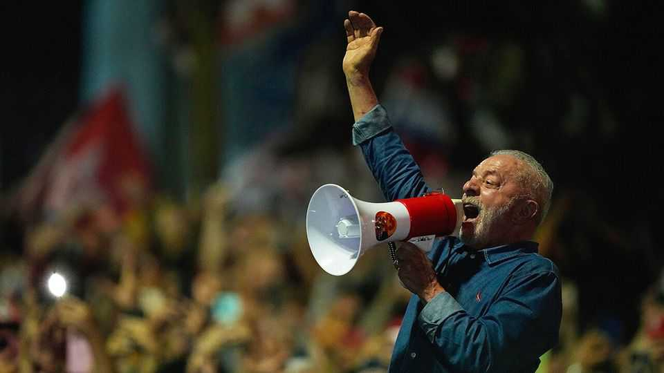
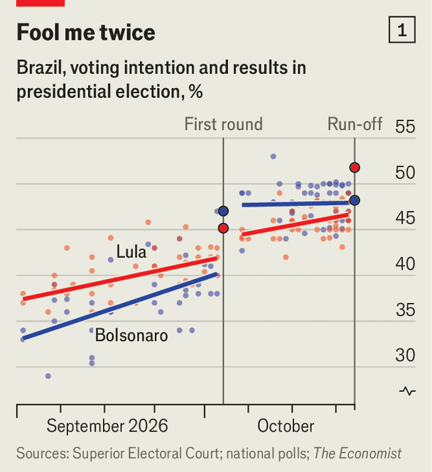
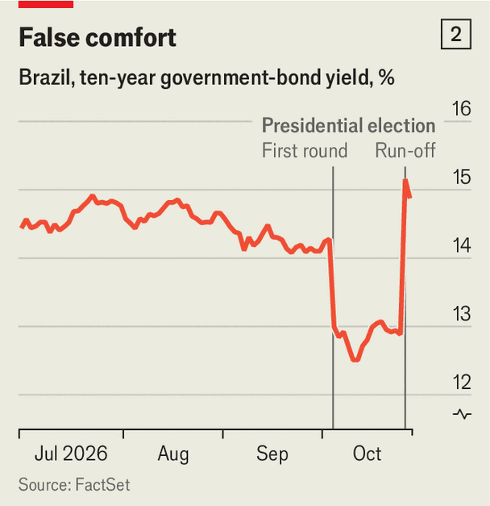

Lula, the great survivor, makes history
His defeated rival has fled to the United States

Oct 29th 2026
EVEN BY BRAZIL’S standards, it was a week of extraordinary drama. On October 25th Luiz Inácio Lula da Silva, who most pundits thought was dead and buried after the first round of voting, won Brazil’s presidential election. That stunning comeback vaults Lula, as the 81-year-old left-winger is known, into an exclusive club of presidents who have won four democratic elections. Two days later his defeated rival, Flávio Bolsonaro—the son of Jair, a hard-right former president who is under house arrest for attempting a coup—fled Brazil after a Supreme Court judge investigating allegations of corruption ordered him to hand in his passports. He has taken his family to the United States.

No presidential candidate since the return of democracy in 1985 had lost the first round of voting and won the run-off. Lula trailed Flávio by 2m votes in the first ballot on October 4th. The candidates who were knocked out at that stage, who between them had received 8% of votes, also chose to back Flávio. Yet in less than three weeks Lula gained an extra 10m votes, many of them from people who had failed to turn out or spoiled their ballots in the first round (see chart 1).
Three things explain the turnaround. The first is a change in tactics. Ahead of the first round, Lula ran a disorganised and old-fashioned campaign. He wore a Panama hat to hide scars from a recent operation; that merely reminded voters of his age. His team barely spent anything on social media. Instead they handed out lots of stickers with his face on them. But between the two rounds Lula discovered both his mojo and the internet. He lost the hat and he began posting selfie videos on Instagram. His campaign got a huge boost from André Janones, a congressman from Minas Gerais, a bellwether state, who set up a WhatsApp channel called “Lula’s Army” which attracted over 10m members in two weeks. Mr Janones gave the members of this group “missions”, such as reposting an image of Lula on social media, which helped his messages go viral in the final stretch of the campaign.
Second, the government opened the taps. Lula raised handouts in Brazil’s flagship welfare programme by 15%. He pushed Congress into passing a law to reduce the working week by a day, without pay cuts. He pledged to make public transport free at weekends and forgive federal debts for sole traders, as well as to hand out $1,000 to a million of them. Incumbents in Brazil often make lavish giveaways before elections, but even so Lula has been generous. His team has not explained how he will fund these and other freebies, which are expected to cost 2% of GDP by the end of next year.
Finally, many Brazilians decided that Flávio was beyond the pale. Two televised debates helped rehash his dodgy past, especially his alleged links to Rio de Janeiro’s militias—groups of corrupt policemen who work as hitmen and extortionists. (Two weeks after the first-round vote, one of Flávio’s allies in Rio was arrested on charges of working with militiamen and drug-traffickers.)
The debates may have been decisive. In one of them Flávio, who is a lawyer, was asked about a case in which he defended a policeman accused of killing a five-year-old girl, which many viewers had not heard about. His arrogance turned voters off, not least when he mocked Lula for having nine fingers. (Lula lost one finger while working in a factory as a teenager.) “I was a minor and working at night, because either I worked or I did not eat,” Lula replied. That highlighted Flávio’s better-off background, and that he got his start in politics thanks to his father.
When his defeat was announced on October 25th, Flávio seemed defiant. He refused to concede (even though he had lost by a reasonable margin, having chalked up 48% of votes compared with 52% for Lula). He argued unconvincingly that a last-minute Supreme Court decision to keep polling stations open for an additional two hours, because of extreme weather and disruptions to public transport, had disadvantaged his campaign. He called for the vote to be annulled.
Yet then events moved very fast. Having failed in his tilt at the presidency, Flávio will in February lose the judicial immunity he has enjoyed as a sitting senator. Recently federal police have been investigating his ties to a businessman accused of massive money-laundering (both he and the businessman deny wrongdoing). The day after the election, the Supreme Court judge who is handling that case banned him from leaving the country.
Police say Flávio did not comply with a request to surrender his passports. Instead, on the evening of October 27th he and his family crossed the border into Argentina. The group then travelled to Miami via Ecuador (the US State Department had said in advance that the United States would be willing to grant them entry). Flávio’s brother, Eduardo, has himself been living in the United States since 2025. In June a Brazilian court sentenced Eduardo in absentia to four years in jail for trying to unduly influence the prosecution of his father—by lobbying Donald Trump to apply sanctions on the judges who sentenced him.
After arriving in the United States Flávio published a statement in which he called himself “the leader of Brazil”, said he was the victim of a “witch hunt”, and vowed to keep leading the opposition from abroad. For the moment Mr Trump does not seem much inclined to back him, beyond permitting him to stay in the country. On October 26th Mr Trump told reporters that Brazil’s vote “looked like another rigged election” while adding that he “didn’t take sides” and saying “I like Lula, I get along with him very well.” On October 28th he said, “I won’t get involved”.

In theory, Flávio’s departure could prove a chance for Brazil’s right to make a fresh start. He became the right’s candidate only because his father anointed him as his heir. That decision sidelined politicians who would have been much more electable. With Jair under house arrest and Flávio abroad, there could now be an opportunity for renewal.
All this has got Lula’s new mandate off to a dramatic start. His honeymoon is going to be short. Though he has won the presidency, right-wingers constitute the largest caucus in both houses. That will make it difficult for Lula to govern, especially since constitutional limits (and his age) mean that he cannot run again. He could become a lame duck from day one.
Brazil’s creaking economy must be his number-one priority. Thanks to his own spendthrift policies, the central bank has pushed up real interest rates to vertigo-inducing heights. Government debt-to-GDP has risen by over ten percentage points during Lula’s current four-year term. Markets panicked when his surprise victory was announced (see chart 2): the real fell by 8% against the dollar—its worst day in more than a quarter of a century—and São Paulo’s stock index closed down 14%. Investors are demanding that Lula appoint a heavyweight as finance minister, rather than a party cadre, and that he set out a credible plan for lower spending. It is worrying that his pre-election giveaways suggest he will not choose to do anything of the sort.
Lula beat the odds to win the presidency. But he will need a lot more luck—and much good judgment—if he is to make a success of his fourth and final term. ■
Sign up to El Boletín, our subscriber-only newsletter on Latin America, to understand the forces shaping a fascinating and complex region.